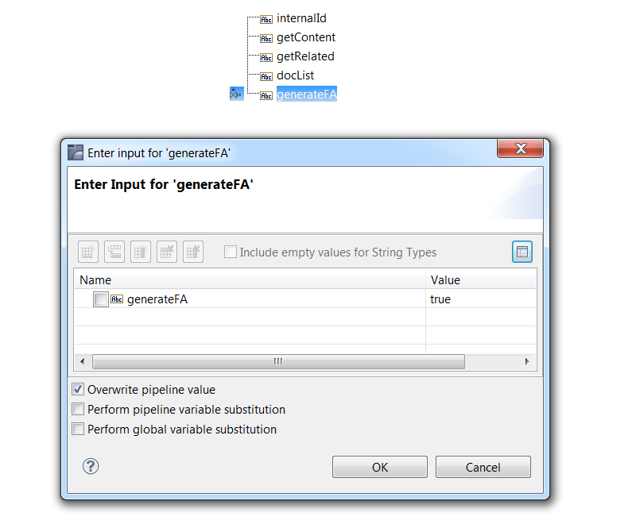
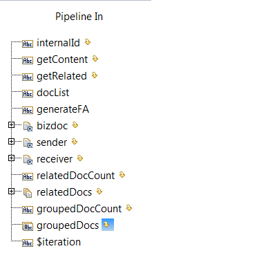
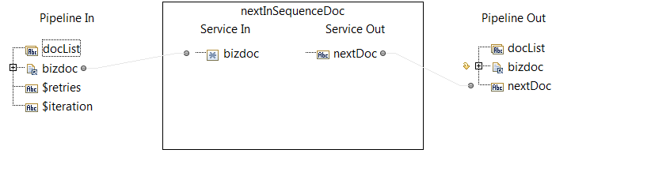

Flow operation | Description |
1 | Invoke the wm.b2b.editn.util.reprocess:listInSequence service to retrieve a list of EDI documents that had out-of-sequence control numbers, but now due to missing documents arriving, are in sequence. For more information about the listInSequence service, see the webMethods Module for EDI Built-In Services Reference. |
2 | The wm.b2b.editn.util.reprocess:listInSequence service returns a list of Trading Networks internal IDs in the docList parameter. This list represents EDI documents that are now in sequence. Loop to perform the following steps against each internal ID in the list. |
3 | Steps 3 through 6 are needed if you use automatic functional acknowledgment (FA) generation for ANSI X12 or UN/EDIFACT documents. If you use automatic FA generation, when reprocessing Interchange documents, you will want to generate FAs; however, when reprocessing Group documents, do not generate FAs because the FAs have already been generated for the document. For more about automatic FA generation, see
Automatically Generating Functional
Acknowledgments. Invoke the wm.tn.doc:view service to retrieve information about the document. Specifically, the value of the EDI Group Type attribute is needed to determine whether the document is an Interchange or Group document. When you invoke wm.tn.doc:view, set the following input parameters: |
4 | The value of the EDI Group Type attribute is in the bizdoc/Attributes/EDI Group Type pipeline variable. To branch based on its value, set the Switch property to the following: bizdoc/Attributes/EDI Group Type |
5 | Add a MAP flow operation to set the value of the generateFA parameter, which is an input to the wm.b2b.editn.util.reprocess:reprocessDocument service. To do so, with the MAP flow operation selected on the Pipeline tab, add a generateFA parameter under Pipeline Out and set the value to one of the following: For example, the diagram shows the pipeline for the MAP when the EDI Group Type attribute is Envelope (that is, the generateFA parameter is set to true).  |
6 | Use a MAP flow operation to clean up the pipeline by dropping all parameters related to invoking the wm.tn.doc:view service. Drop the following parameters: internalID, getContent, getRelated, bizdoc, sender, receiver, relatedDocCount, relatedDocs, groupDocCount, and groupedDocs.  |
7 | Invoke the wm.b2b.editn.util.reprocess:reprocessDocument service to reprocess an EDI document that is now in sequence. To set the inputs for this service, with this flow operation selected, perform the following on the Pipeline tab: For more information about the reprocessDocument service, see webMethods Module for EDI Built-In Services Reference. |
8 | After you reprocess a document, there might be another out-of-sequence document that is now in sequence. This next document that is now in sequence would be one that has the same sender/receiver and group type as the one you just reprocessed. For example, if you reprocess a Group document of group type "PO" from sender A and receiver B, and the Group document had the control number 4. The Group document of group type "PO" from sender A and receiver B with control number 5 might also be available to process, and it is now in sequence. To locate and reprocess the next document in sequence, use a REPEAT loop. You will exit this loop when a pipeline variable becomes null, indicating there are no more next documents in sequence. (See step 11 below.) When defining the properties for the REPEAT loop, do the following: |
9 | Invoke the wm.b2b.editn.util.reprocess:nextInSequenceDoc service to determine whether there is another document that had an out-of-sequence control number that is now in sequence due to the processing the document in step 2 above. The input to this service (bizdoc) is in the pipeline because it is an output of the wm.b2b.editn.util.reprocess:reprocessDocument service. The Pipeline In variable will automatically map to the Service In variable. You should drop the bizdoc parameter in Pipeline Out.  If the nextInSequenceDoc service locates a next document, it returns the Trading Networks internal ID of the document in the nextDoc parameter. Otherwise, the nextDoc parameter will be null. For more information about the nextInSequenceDoc service, see webMethods Module for EDI Built-In Services Reference. |
10 | Use a BRANCH flow operation to branch based on the value of the nextDoc parameter, which is the result of the nextInSequenceDoc service. |
11 | If the value of nextDoc parameter is null, exit the REPEAT loop. |
12 | If the nextDoc parameter has a value, prepare to execute the wm.b2b.editn.util.reprocess:reprocessDocument service against this next document to reprocess it. The following flow operations are similar to steps 3 through 6 described above. Differences are noted below. When setting the inputs to this service, map the nextDoc parameter under Pipeline In to internalID under Service In. |
13 | Invoke the wm.b2b.editn.util.reprocess:reprocessDocument service against the next document to reprocess it. To set the inputs for this service, with this flow operation selected, perform the following on the Pipeline tab: |